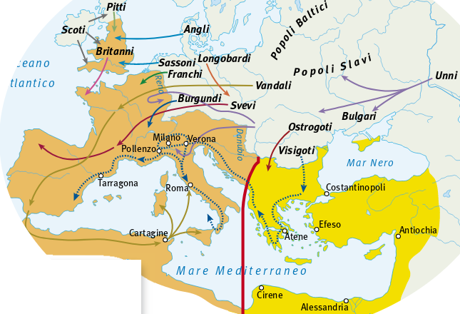

Goti
Arrivati nelle pianure a nord del Mar Nero, gli Unni si scontrarono con le popolazioni germaniche che vi vivevano. Si trattava dei Goti, una popolazione di origine scandinava che, a causa dei rapporti difficili con Roma, si era stanziata lontano dalle frontiere imperiali. Collocandosi intorno al fiume Dniestr, si era divisa nei due gruppi degli Ostrogoti (Goti dell’est) e Visigoti (Goti dell’ovest).
Nel 372 gli Ostrogoti si sottomisero agli Unni. I Visigoti fuggirono invece verso la frontiera imperiale sul Danubio, chiedendo di poterla oltrepassare. L’imperatore Valente accettò, ma pretese dai Visigoti una sottomissione che costoro si rifiutarono di dare; alla loro ribellione rispose con la guerra, ma ebbe la peggio. L’esercito romano fu sconfitto nel 378 ad Adrianopoli, nel corso di una disastrosa battaglia in cui morì lo stesso imperatore. Il mito dell’invincibilità militare di Roma era crollato per sempre. I Visigoti furono il primo popolo barbarico capace di conquistarsi con le armi il diritto di occupare una parte dell’Impero.
La sconfitta di Adrianopoli obbligò il successore di Valente, l’imperatore Teodosio, a riprendere la politica religiosa di Costantino. Avendo bisogno dell’aiuto della Chiesa per sostenere in vita l’Impero, egli dichiarò il cristianesimo religione di Stato. Teodosio introdusse una nuova suddivisione dell’Impero, ormai troppo vasto per essere governato da un solo imperatore. Venne così diviso in due parti, assegnate alla morte di Teodosio, nel 395, ai suoi due figli. Ad Arcadio andò la metà orientale, con capitale Costantinopoli; ad Onorio la metà occidentale, con capitale Milano. Roma perse il suo ruolo di residenza imperiale e di capitale. A lungo andare, questa divisione ebbe conseguenze negative, poiché finì per indebolire l’Impero. Tra la metà orientale e la metà occidentale si scatenò la rivalità: davanti alle minacce esterne, ciascuno dei due imperatori fu portato a pensare prima di tutto alla propria salvezza. Scoppiata una nuova rivolta dei Visigoti, infatti, Arcadio invitò il loro re Alarico a stanziarsi nei Balcani. Giunti sull’Adriatico, i Visigoti videro aperta la via per l’Italia e decisero di invaderla.
Intorno al III secolo d.C. quelle popolazioni che si erano insediate nelle regioni oltre i confini romani del Reno e del Danubio, avevano cominciato a darsi una configurazione politica e sociale più compatta. Originariamente divisi in tribù, in seguito a un processo di aggregazione, i Germani si erano costituiti in più vaste leghe, alcune delle quali avrebbero dato origine ai popoli protagonisti delle migrazioni del secolo successivo, come gli Alamanni e i Franchi. Avevano incominciato a coltivare i campi con una certa continuità e quindi erano passate dalla vita nomade a quella sedentaria; avevano introdotto la proprietà privata, mantenendo di uso comune solo i boschi e i pascoli; avevano inoltre adottato una forma di scrittura, basata sull’alfabeto runico, diffuso tra i popoli della penisola scandinava.
Di fronte alla minaccia dei Visigoti, l’Impero d’Occidente affidò il comando dell’esercito a Stilicone, un generale di origine germanica. I Visigoti furono sconfitti in due grandi battaglie, a Pollenzo nel 402 e a Verona nel 403. Ma a questo punto sopraggiunse un fatto imprevisto. Stilicone aveva dovuto richiamare in Italia le truppe dislocate in Europa. La frontiera del Reno rimase sguarnita e fu facile per le tribù germaniche attraversarla in massa nell’inverno del 406, camminando sul fiume ghiacciato. Si aprì così l’epoca delle invasioni barbariche. Molti dei popoli penetrati nell’Europa occidentale migrarono a lungo, prima di trovare uno stanziamento definitivo. Tra gli invasori più violenti ricordiamo i Vandali, che con le loro razzie percorsero tutta l’Europa, stabilendosi in Spagna (nella regione da loro chiamata “Vandalusia”, poi Andalusia) e nell’Africa del Nord. I Burgundi si insediarono tra le Alpi e la Provenza, lungo i fiumi Saona e Rodano. Alamanni e Marcomanni occuparono la regione del Reno, nelle attuali Alsazia e Svizzera. A cavallo del Reno si stanziarono anche i Franchi , che si divisero in Franchi Salii, nei Paesi Bassi e nella Francia del Nord, e Franchi Ripuarii , nella regione tedesca compresa tra Colonia e la Mosa. Oltre la Manica, gli Angli e i Sassoni si insediarono in Britannia (la Gran Bretagna di oggi). I Bretoni abbandonarono l’isola, rifugiandosi nella penisola francese che da loro prese il nome di Bretagna.